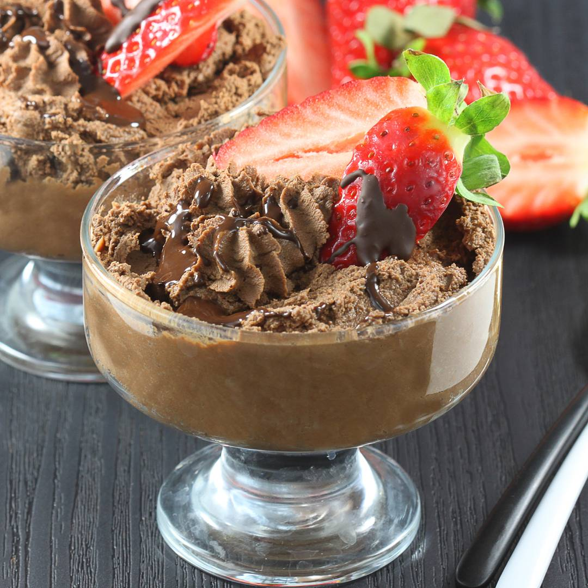

Mus czekoladowy

Opis:
Prosty do zrobienia, pyszny mus czekoladowy, który zrobisz tylko z czterech składników. To wspaniały i bardzo uniwersalny mus bez jajek, za to z serkiem mascarpone. Świetny do tortów oraz jako deser w pucharku.
Składniki:
- 250 g śmietanki kremówki 30%
- 250 g serka mascarpone
- 200 g gorzkiej czekolady
- 2 łyżki cukru
Przygotowanie:
- Umieść śmietankę w zamrażarce na 20 minut przed przygotowaniem musu.
- Czekoladę roztop w mikrofalówce lub w kąpieli wodnej.
- Serek mascarpone umieść w misce, dodaj roztopioną czekoladę.
- Miksuj na niskich obrotach ok. jedną minutę.
- Śmietankę ubij mikserem w wysokim naczyniuk, w trakcie ubijania dodaj cukier.
- Dodaj krem mascarpone z gorzką czekoladą i wymieszaj całość.
- Mus podawaj w pucharkach, możesz go także udekorować resztkami roztopionej czekolady i owocami.